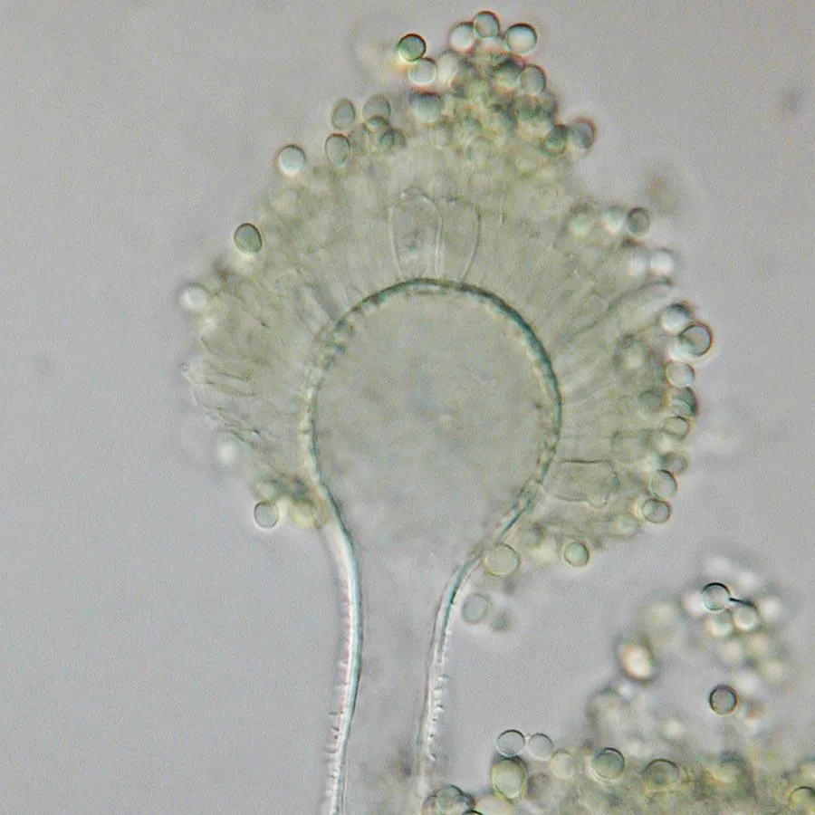

真菌 · 真菌界
黄曲霉 Aspergillus flavus

常侵染花生、玉米等作物的霉菌，其产生的黄曲霉毒素是强致癌物，是食品安全监测的重点关注对象。
- 分类
- 门子囊菌门纲散囊菌纲目散囊菌目科曲霉科属曲霉属
- 栖息环境
- 花生、玉米、坚果等作物的种子和土壤，高温高湿时易繁殖
- 地理分布
- 全球热带和亚热带地区，暖湿的储粮环境中常见
- 保护级别
- 暂无评估（产毒真菌，非保护对象）
物种志
黄曲霉是子囊菌门散囊菌目的霉菌，菌丝有隔，在培养基上形成黄绿色至黄褐色的菌落。它的分生孢子梗直立，顶端顶囊上着生瓶梗，产生大量球形小分生孢子；部分菌株还能产生菌核。黄曲霉最受关注的是它能合成黄曲霉毒素，其中黄曲霉毒素 B1 是已知最强的天然致癌物之一。
黄曲霉广泛分布于热带和亚热带地区，常侵染花生、玉米、棉花籽和坚果等作物，在高温高湿的储运条件下容易大量繁殖并产生毒素。人畜摄入被污染的食物后，毒素主要损害肝脏，长期低剂量暴露会增加肝癌风险，急性中毒则可导致肝损伤甚至死亡。因此粮食和饲料的黄曲霉毒素检测是食品安全的重要内容。预防关键在于控制储粮水分、低温和通风，及时剔除霉变颗粒。
形态与习性
- 分类子囊菌门散囊菌目曲霉属
- 菌落黄绿色至黄褐色
- 孢子分生孢子球形，大量产生
- 毒素产生黄曲霉毒素，B1 为强致癌物
- 危害污染粮食和饲料，损害肝脏，增加肝癌风险
- 防控控制储粮水分、低温通风，剔除霉变颗粒
趣味知识
- 黄曲霉产生的黄曲霉毒素 B1 是已知最强的天然致癌物之一。
- 它常侵染花生和玉米，在高温高湿的储粮环境中大量繁殖。
- 粮食和饲料的黄曲霉毒素检测是食品安全监管的重要内容。